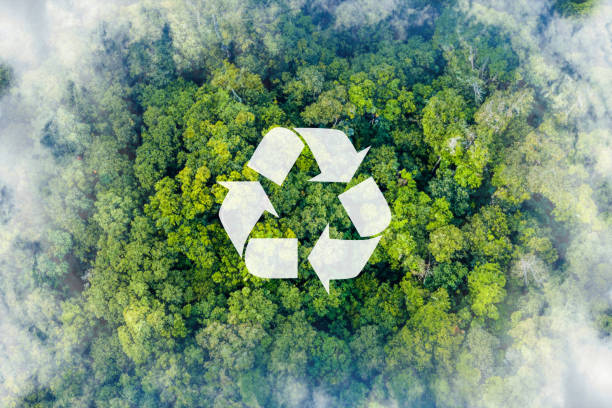
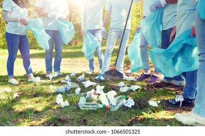

🔄 Reciclaje y reutilización

📢 Campañas de concienciación

💚 Voluntariado ecológico
El ranking clasifica a los participantes según sus aportes a la gestión de residuos a nivel nacional. Se otorgan puntos en las siguientes categorías:
Optimización de residuos: Se premia la reducción, reutilización y reciclaje de materiales.
Aportaciones: Se otorgan puntos por iniciativas y donaciones para la gestión de residuos.
Educación ambiental: Participación en campañas y concientización sobre residuos.
Reportes ciudadanos: Se contabilizan los reportes sobre residuos en zonas públicas.
| Posición | Nombre | Puntos | Categoría |
|---|---|---|---|
| 🥇 1 | EcoVerde CR | 950 | Optimización |
| 🥈 2 | ReciclaYa | 870 | Aportaciones |
| 🥉 3 | GreenFuture | 820 | Educación |
🔄 Reciclaje y reutilización
📢 Campañas de concienciación
💚 Voluntariado ecológico